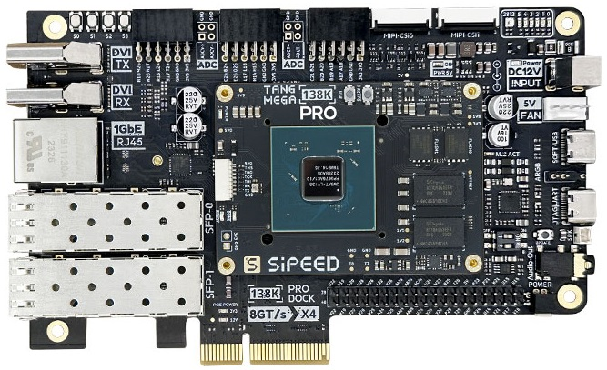

English
EnglishTang Mega 138K Pro Dock
Update history
| Date | Version | Author | Update content |
|---|---|---|---|
| 2025-01-24 | v0.3 | Serika |
|
| 2024-09-26 | v0.2 | Serika |
|
| 2023-08-29 | v | wonder |
|
Product Overview
Tang Mega 138K uses a 22nm process GW5AST-LV138FPG676A FPGA chip, which has 138,240 lookup table units and nearly 300 DSP units. It contains eight high-speed transceivers with a speed range of 270Mbps ~ 12.5Gbps, suitable for transmitting data through high-speed ports such as fiber optics or PCIE. In addition, the chip contains a hard-core PCIE, which consumes better resources when using PCIE and achieves better performance. It is suitable for high-speed communication, protocol conversion, high-performance computing, and other occasions.
aliexpress purchase link: Click me
Board Features
- Large capacity LUT
- Large capacity memory
- PCIe 3.0 x 4
- SFP+ x 2
- RISCV hard core
Product Appearance
Hardware Parameters
SOM Board Parameters
| Item | Parameter | comment | ||||||||||||||||||||||||||||||||||||
|---|---|---|---|---|---|---|---|---|---|---|---|---|---|---|---|---|---|---|---|---|---|---|---|---|---|---|---|---|---|---|---|---|---|---|---|---|---|---|
| FPGA Chip | GW5AST-LV138FPG676A |
|
||||||||||||||||||||||||||||||||||||
| Memory | 1GB DDR3 | 512MB x 2 | ||||||||||||||||||||||||||||||||||||
| Flash | 128Mbits Flash x 2 | See How to Burn to Flash | ||||||||||||||||||||||||||||||||||||
| Debug Interface | Jtag + Uart | JST SH1.0 8Pins Connector | ||||||||||||||||||||||||||||||||||||
| Overall Package | 50mm x 70mm Size | BTB CONN. Connects the SOM and the Dock Board |
Dock board Parameters
| Item | Quantity | Remarks |
|---|---|---|
| LED | 6 | |
| WS2812 | 1 | The WS2812 & aRGB strip CONN. share the same pin |
| Button | 4 | |
| PCIE | 1 | |
| SFP+ | 2 | |
| Gigabit Ethernet | 1 | |
| DVI RX | 2 | Mutually occupied with DVI TX |
| DVI TX | 2 | Mutually occupied with DVI RX |
| PMOD | 3 | |
| ADC | 2 | |
| MIPI CSI | 2 | 3 LANE MIPI CSI |
| WS2812 | 1 | The aRGB strip CONN. & WS2812 share the same pin |
| DVP Interface | 1 | |
| RGB Interface | 1 | Supports RGB888 screen |
| MIC ARRAY Interface | 1 | Supports connecting Sipeed 6+1 microphone array |
| SD Card Slot | 1 | |
| EEPROM | 1 | Can store necessary information |
| M.2 Socket | 1 | Reserved, can write peripheral driver yourself |
| PWM Fan Interface | 1 | |
| Speaker Interface | 1 | |
| 3.5mm Headphone Jack | 1 | |
| Custom USB | 1 | Cannot power the board |
| MS5351 | 2 | Provides RefClk for Serdes; control output via onboard UART |
| USB JTAG&UART | 1 | Supports FPGA programming and provides UART function |
| 40P Pin Header | 1 | |
| Power Switch | 1 | |
| 12V DC | 1 |
Hardware Resources
Board Specification
Board Schematic
PCB BOM
Board Dimension Diagram
Board 3D Model
Some Chip Manuals
Getting Started
Note that 138K Pro is currently not supported by the education version, and you need to download V1.9.9 or a newer version of the commercial IDE for use.
Lic can be applied on the Gowin official website, or you can use the online Lic service provided by Sipeed. In the IDE, select Float Lic and fill in the following information:
---Server 01---
ip: 45.33.107.56
port: 10559
---Server 02---
ip: 106.55.34.119
port: 10559
if the ip not work, try use "gowinlic.sipeed.com" domain's IP.
Install IDE Click me
Example code github
Other Learning Resources
- Free online tutorial: Verilog Tutorial (Learn Verilog)
- Free online FPGA tutorial: Verilog (English website)
- Verilog practice website: HDLBits (English website)
- Online Gowin Semiconductor reference video tutorials: Click here
Communication Methods
- Reddit : reddit.com/r/GowinFPGA/
- Telegram : t.me/sipeed
- Discussion forum: maixhub.com/discussion
- QQ discussion group: 834585530
- Leave a message directly below this page
- Business email : support@sipeed.com
Precautions
| Item | Precautions |
|---|---|
| Chip Model | The specific model of the FPGA chip used by Tang Mega 138K Pro is GW5AST-LV138FPG676A. Please select the package model FCPBG676A & Device Version: B in the IDE. How to identify the device version |
| Static Electricity | Please avoid static electricity hitting the PCBA; release the static electricity from your hands before touching the PCBA. |
| Tolerance Voltage | When using GPIO pin headers for external communication, ensure that the IO voltage is 3.3V. Excessive voltage will permanently damage the PCBA. |
| FPC Socket | When connecting the FPC soft cable, please ensure that the cable is completely and correctly inserted into the socket without any deviation. |
| PCIE Gold Finger | When testing the PCIE gold finger, ensure that both the host and the board are in the off or unpowered state to avoid short-circuiting the gold finger due to displacement during the insertion process. |
| Plug and Unplug | Please completely power off before plugging and unplugging. |
| Avoid Short Circuit | Please avoid any liquid or metal touching the solder pads of the components on the PCBA during the power-on process, otherwise it may cause a short circuit and burn the PCBA. |
| Protecting the die | Please avoid any impact on the exposed chip die during the process of removing and installing the heat sink. Do not press the heat sink hard after installing it. Otherwise, the chip die will be damaged. |
Contact
Tang Mega 138K can meet different needs of customers in various scenarios. For technical support and business cooperation, please contact support@sipeed.com
Frequently Asked Questions (FAQs)
The system does not recognize the onboard debugger
- Try connecting directly to the computer instead of through a USB HUB.
- Try using a better quality USB cable.
- Try another computer to rule out the computer being the problem.
- Try update to the latest firmware and try again.
The UART of the onboard debugger cannot be used
- Try reinstall FTDI drivers.
- IF the actual baudrate is always four times the set baudrate or the UART continuously outputs garbled characters. try update to the latest firmware and try again.
OpenFPGAloader not work
- Try update to the latest firmware and try again.
How to update the firmware for the onboard debugger
- See Update the debugger for details.
The power light is not on after the board is powered on
- Please check if the power switch of the board is turned on.
- Check your power supply method.
How to burn the bitstream to FLASH
- Setting the Programmer as shown in the figure below:
No Response or Undesirable Pin Phenomenon After Burning
- First, ensure that the IDE has selected the correct model GW5AST-LV138FPG676AC1/10; every parameter in the figure below MUST be consistent.

- Then, check your code and the corresponding simulation waveforms to meet the requirements. The GAO tools in GOWIN IDE maybe helpful. For more information, please refer to the GOWIN document SUG100(require login).